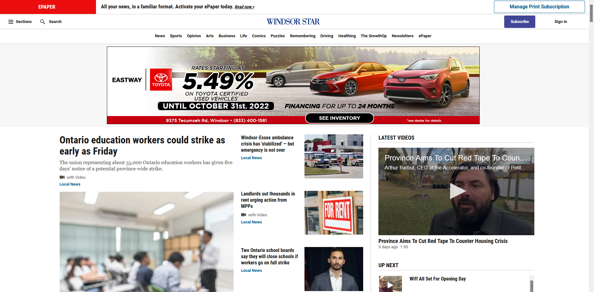

Windsor Star
Desktop View
The desktop view of this site seems a little crowded. They also have a navigation on the top, with a hamburger on the side aswell displaying almsot the same information, which seems redundant
Mobile View
The movile view of this site is very effective. The header cleans up nicely and the columns float below eachother to create a simplified look.
Review:
This site is using a responsive design.
No image responsive technologies are present. When moving slowly from desktop to mobile view the ads do not dynamically change.
The mobile view of the site is simple, and doesnt create confusion for the users. The responsize technique was use effectively on this page.
I would change the hamburger icon to be bigger so that it is easier for a user to find where to move forward with their search.